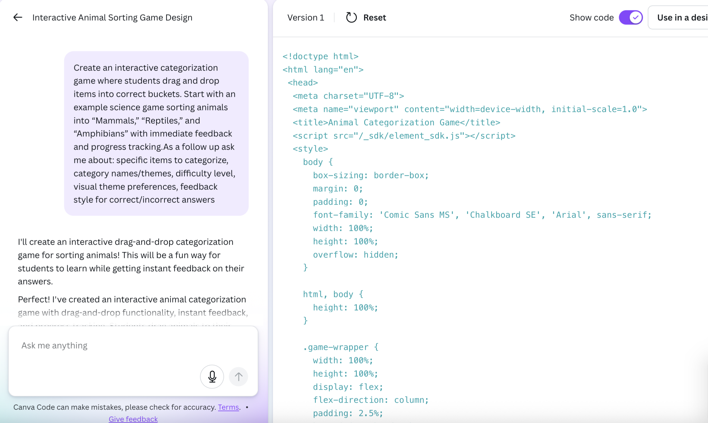
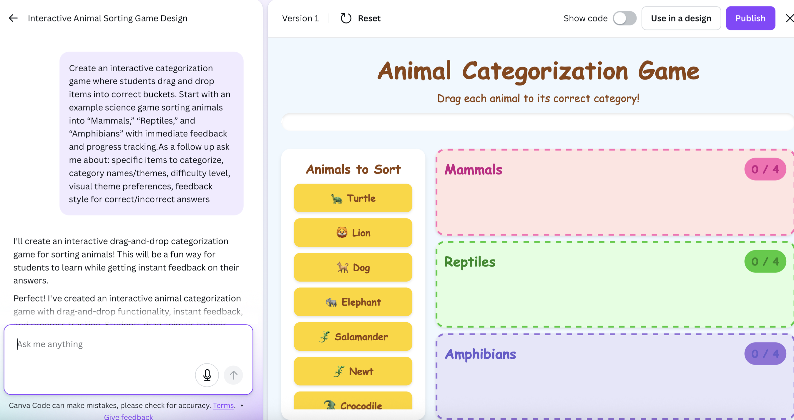

Every designer knows that Canva is a very quick and easy tool.
Many start learning the basics of graphic design through the platform.
As careers advance, it is still a valuable tool for creating wireframes,
user interface drafts,
and event advertisements.
Take your designs to the next level with the three sections of Canva Magic Studio.
The free plan offers 20 free generated elements for free.
For full access, a premium plan is required.
Tool #1: Code Helper
◼ Choose or create your own prompt that will loosely generate an outline of the concept you
would like to create.
◼ Canva will generate HTML, CSS, and JavaScript code.
◼ Unfortunately, you cannot edit the direct code, but you can do basic editing when added to a design.
◼ This is a great tool if you would like to add a similar aspect to your own personal coding projects.
◼ Treat it as a skeleton and tweak it to make it your own.
Tool #2:Magic Switch
This tool is perfect if you want to convert media into a different format.
It doesn’t just automatically change the size of the document to fit a social media post,
but the elements are adjusted proportionally.
If you want to make any changes, this makes it easier to visualize how the final product will
look across platforms. It’s similar to designing a UI for desktop vs a smartphone.
Tool #3:Magic Grab
Create a sticker-like-element
from any aspect of a design.
This makes overlaying text or smaller, more intricate details like logos, easier to position and clone.
Tool #4:Background Remover
◼ Eliminates the need for another software or excessive editing through traditional Canva.
◼ Select the object you want to remove, and the Ai will fill in the background as if it was never there.